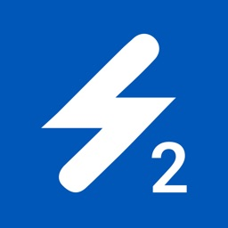
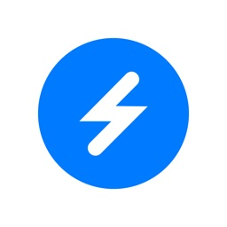

QA-SWIFT

- Client
- Swift Medical Inc.
- HQ
- Toronto, Ontario, Canada
- Role
- Senior QA Engineer
- Period
- Sep 2015 – Mar 2025
- Hours
- Full-time, 40 h/week
- Platform
- iOS, Android
- Tracker
- Jira, TestRail → Azure DevOps
Full-time QA for Swift Medical's clinical apps, from the early startup years to the launch of Skin & Wound 2. Clinicians in more than 4,800 healthcare facilities rely on these apps to photograph, measure and track wounds.

Achievements
Test Coverage
I wrote and maintained test cases in TestRail, then in Azure DevOps. They became the regression coverage that every weekly build had to pass before it reached clinicians.
Longevity
From September 2015 to March 2025, through the company's growth from startup to an AI platform.
Product Evolution
The original Swift Skin and Wound app (2018) and its AI-driven successor, Skin & Wound 2 (2024).
Process Migration
Moved defects and test cases to the new tooling while weekly release testing carried on.
Remote Collaboration
Worked 40 hours a week from Indonesia, coordinating with a team spread across countries and time zones.
How We Worked
Team
I worked 40 hours a week, mostly asynchronously, with team members in several countries. A short daily stand-up kept builds, priorities and blockers coordinated.
Defects
Every bug was logged with clear steps to reproduce and an expected result, then tracked until the fix was verified on the next build.
Test cases
I kept the cases current as features changed, so the weekly regression runs always matched how the product actually worked.
Apps I Tested

Gen 1 · 2018
The original enterprise app for photographing, measuring and tracking wounds across a whole patient population.
Gen 2 · 2024
The AI-driven successor, with automatic wound measurement and EHR integration, used for more than 50 million patient assessments.
The Client
Swift Medical turns the smartphone camera into a clinical tool. Its apps build a 3D model of a wound and measure it automatically, replacing rulers and manual estimates. The AI behind it is trained on more than 32 million wound images.
Joined as QA. Weekly builds, Jira and TestRail.
Swift Skin and Wound launches on the App Store.
US$35M Series B raised.
Skin & Wound 2 released.
Engagement completed after about 9.5 years.
Contact